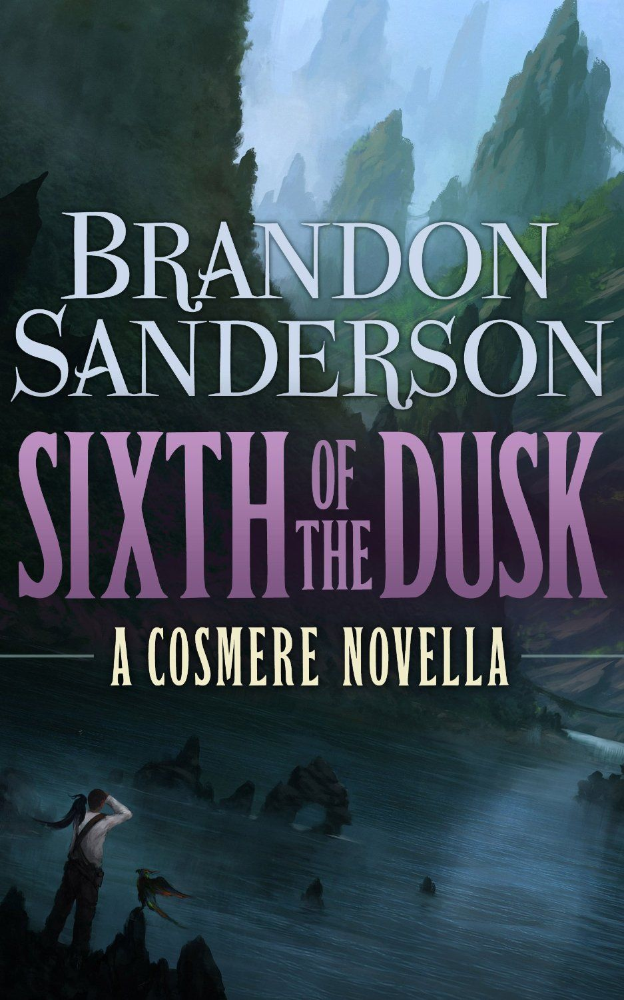

Sixth of the Dusk
⭐️⭐️⭐️⭐️
Format: 📖 (66 pages)
Save yourself from reading my whole review, and just splurge on the $3 this ebook will cost you. If you don't like the book, let me know and I'll send you a hand-written apology.
I read this in a day. I loved it, but can't give it five stars for the simple reason that it was SO short. Fine. I get it. You "don't like fantasy" novels. You like Harry Potter, however. That's fantasy, whether you like to admit it or not. This book isn't the typical epic fantasy style of knights on horses, wielding swords and magic. In fact, these island people don't have any magic, but predators hunt their prey by sensing their minds, and birds bestow talents/abilities on others. This book is done so well, in such a small amount of space.
- Prior: David and Goliath
- Next: Jonathan Strange & Mr Norrell